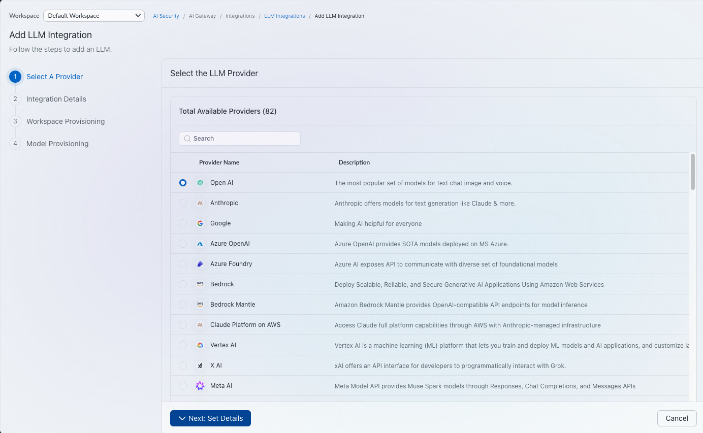
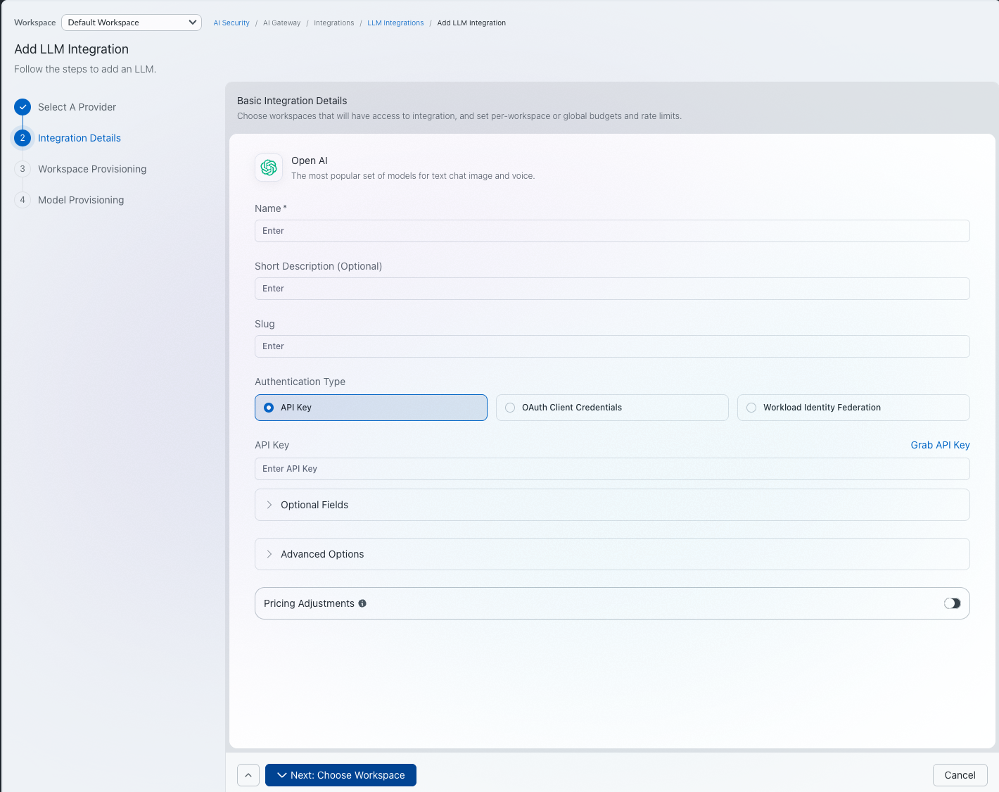

OpenAI Integration
The OpenAI credential, all three authentication paths in the Add LLM Integration wizard, the identity provider and OpenAI console work that federation needs, and a first call that proves the connection
What this covers
This page connects the AI Gateway to OpenAI, starting at the credential in the OpenAI platform and ending at a model call that returns a completion. OpenAI offers three authentication paths, and each one gets its own section with its own prerequisites, its own fields and its own failure modes.
OpenAI is the only provider in this set captured in a live Strata Cloud Manager tenant. The screenshots here come from that capture on 2026-11-17, so the field names, the placeholders and the order of the controls match what the wizard renders rather than what a product page describes.
The Add LLM Integration wizard has four steps. This page covers step 1, Select A Provider, and step 2, Integration Details, which is the only step whose content changes with the provider. Step 3, Workspace Provisioning, and step 4, Model Provisioning, are identical for every provider and belong to configuration chapter 9, together with the slug convention, the model allowlist, and budget and rate limits.
The model provider prerequisites page lists what to ask the customer to collect before the session. This page is what happens during it.
![Architecture of the AI Gateway fronting the OpenAI platform. The application sends a base URL, a gateway key and an at-slug model reference. The gateway authenticates the key, resolves the slug, checks the model allowlist, budget and rate limits, applies guardrails, then strips the gateway key and attaches the integration OpenAI key before calling the OpenAI API endpoint. A panel notes that the OpenAI usage dashboard sees one key making every call, so per-team breakdown lives in gateway logs rather than OpenAI billing. Further panels cover the Strata Cloud Manager integration fields, the distinction between the OpenAI API and the ChatGPT app, and the two meters that run at once.](../diagrams/aigw-openai.svg)
Prerequisites
Three of these apply whichever path you take. The rest depend on the path, and the federation path needs the most people in the room.
- Strata Cloud Manager access — an administrator who can create organization-level integrations. The integration write permissions are on the Security tab covered by configuration chapter 4.
- A workspace and a workspace API key — the key proves the integration works at the end of this page. Configuration chapter 8 creates it.
- A slug and a model list — decide the slug before you type it, because applications reference it. The model list determines the allowlist in step 4 of the wizard.
| Path | On the OpenAI side | On the identity provider side |
|---|---|---|
| API key | An OpenAI platform account that can create an API key in the project the gateway should bill. The Organization ID and the Project ID if you intend to set them. | Nothing. |
| OAuth client credentials | Nothing created in the OpenAI console on this path. | An OAuth 2.0 authorization server with a client credentials client: a token endpoint, a client ID, a client secret and a scope. |
| Workload Identity Federation | Permission to manage Workload Identity Providers in the OpenAI organization, plus the project and the service account the gateway should use. This permission is required for this path only. | An OIDC identity provider that issues signed JWT access tokens through the client credentials grant, and an administrator who can create applications in it. |
Workload Identity Federation touches the identity provider, the OpenAI organization and Strata Cloud Manager, and those three are rarely owned by the same person. Confirm before the session that someone present can create an app registration or an Okta authorization server, and that someone present holds the OpenAI organization permission named above. Without the second one the path stops at the provider step with nothing to show for the first hour.
Choose a path
The three paths differ in what the gateway stores, how much setup they take, and how fast access can be withdrawn. Those questions settle the choice more often than any preference about OAuth.
| Path | What the gateway stores | Setup outside Strata Cloud Manager | Revocation |
|---|---|---|---|
| API key | The OpenAI platform key, encrypted, or a reference to it in your vault | One key created in the OpenAI platform | Delete the key in the OpenAI platform |
| OAuth client credentials | A client ID and client secret for a token endpoint you own | One client credentials client on an authorization server | Rotate or disable the client at the authorization server |
| Workload Identity Federation | A client ID and client secret for your own identity provider. No OpenAI key exists. | An identity provider application pair, an OpenAI Workload Identity Provider, and a service account mapping | Disable the mapping. Cached tokens expire within 15 minutes. |
Federation removes the stored provider key, and it adds an identity provider, a provider-side mapping and a second token exchange to the list of things that can break. A customer with an existing OIDC identity provider and a security standard that names federated identity should take that path. A customer whose key can sit in a vault and rotate on a schedule reaches a defensible position on the API key path with far less to run. Make the choice before you create the integration, because applications point at the slug and the authentication type is a property of the integration behind it.
Start the wizard
The first two steps are the same on all three paths. Take them now, then continue in the section for the path you chose.
The catalog is large and the tiles are not alphabetical, so search rather than scroll.
- Go to AI Security → AI Gateway → Integrations → LLM Integrations.
- Confirm the workspace selector at the top left names the workspace you intend to work in.
- Click Add LLM Integration.
- Search for
Open AIand select the row. The product spells the tile with a space. - Click Next: Set Details.
The picker counted 82 providers in the tenant on 2026-11-17:

With Open AI selected:

Azure OpenAI serves OpenAI models from an Azure resource and takes a different credential, different fields and a deployment name instead of a model name. Pick the Open AI tile only when the customer buys directly from OpenAI. The Azure OpenAI guide covers the other case.
The wizard advances to Integration Details and the rail marks step 1 complete. The header names Open AI.
These three fields sit above the Authentication Type control and do not change with the path.
| Field | Required | What to enter |
|---|---|---|
| Name | Yes | A human label, for example OpenAI Production. Shown in the integration list. |
| Short Description | No | What this integration is for, and which team owns the credential. |
| Slug | No | The identifier callers put in the model reference, for example openai-prod. Lowercase letters, digits and hyphens. |
Every caller names the integration by slug, so changing it later means changing every application and every config that references it. Configuration chapter 9 sets out the convention: provider and environment, lowercase and hyphenated, with no team name and no model name. Apply the same convention to the development integration you are about to create next.
The Name field holds a value, the Slug matches a convention you have written down, and the Authentication Type control below shows three cards with API Key selected by default.
API key
The gateway stores one OpenAI platform key and uses it for every call made through this integration. The applications never see it. This is the default selection on the Authentication Type control and the shortest of the three paths.
OpenAI sends no usage data when the caller sets stream: true. The gateway then records zero tokens and zero cost for that request, so budgets, rate limits and cost dashboards all read low while real spend continues. The caller must also send stream_options: {include_usage: true}.
This is a property of the OpenAI API rather than of the authentication path, so it applies to the OAuth and federation paths on this page as well, and to every OpenAI-compatible provider including Azure OpenAI. Check it with the application team before the integration goes live, because the symptom is silence rather than an error.
Create the key in the project the gateway should bill, and create it against an account that will outlast the engagement.
- Sign in to the OpenAI platform at
https://platform.openai.com. - Select the organization and the project the gateway should use.
- Create a new secret key and copy the value immediately. OpenAI shows it once.
- Record the Organization ID and the Project ID alongside it if you intend to set them in the next step.
A platform key belongs to the account that created it. Create it from a service account or a shared owner account rather than from a consultant login, and hand the rotation schedule to the customer in the same session.
The key value is in your clipboard or your vault, and the OpenAI platform lists it under the correct project.
With API Key selected, the control shows a single credential field.
- Leave API Key selected on the Authentication Type control.
- Paste the key into the
Enter API Keyfield. - If your tenant offers a Secret Ref control on this field, switch to it and select the reference instead, and supply a Secret Key when the reference holds several values. See the note below on availability.
The Integration Details step with the API Key path selected:

No Secret Ref control appeared beside the API Key field on any provider tile, and the admin panel had no Secret References area. Secret references require gateway 2.2.4 or higher, and below that version the area is absent and integrations take literal credentials only. Confirm the version on the customer tenant before promising that provider keys will live in their vault.
Where the capability is present it is worth using, because a referenced credential rotates in the vault and the gateway picks up the new value with no change here. A pasted credential has to be re-entered on every integration that holds it, at every rotation, so record which integrations hold which key while you create them. Configuration chapter 3 creates the reference, and LLM API key management covers building the vault.
A Grab API Key link sits to the right of the API Key label on this screen. Whether it deep-links to the OpenAI platform or opens a secret picker inside Strata Cloud Manager is unconfirmed, so do not demonstrate it to a customer without clicking it first in your own tenant.
The API Key field shows a masked value or a selected secret reference, and the Next: Choose Workspace button is active. The credential is not validated at this point: the first call in Make the first model call is what proves it.
Both fields are optional and both change where OpenAI records the cost of a call. Set them when the answer matters to the customer's billing, and skip them when the key already belongs to exactly one organization and one project.
| Field | Required | What it changes |
|---|---|---|
| Organization ID | No | Sends the cost to a specific OpenAI organization. Set it when the owner of the key belongs to more than one organization, because the default organization on the account is not always the one the customer intends to bill. |
| Project ID | No | Keeps the cost records for one project inside that organization. Set it when the customer separates spend by project in the OpenAI platform. |
OpenAI spells its own field Organization ID. The gateway sends these two values as the OpenAI-Organization and OpenAI-Project headers on every request the integration makes.
The captured screen shows collapsed Optional Fields and Advanced Options sections that were not expanded. Organization ID and Project ID are expected to sit under Optional Fields, and that placement is unconfirmed. Expand both sections in your own tenant before you tell a customer where to type the values.
After the first call, the OpenAI platform shows the usage under the organization and project you named. A call that lands under a different project means the fields were left empty or the key belongs elsewhere.
OAuth client credentials
On this path the gateway holds no OpenAI key. It holds a client ID and a client secret for a token endpoint you own, requests an access token with the client_credentials grant, and uses that token on the call. The four fields are generic OAuth fields and none of them carries the OpenAI name, so the wizard itself marks this path as generic. The two provider-prefixed fields appear only on the federation card.
Every value on this path comes from the authorization server, not from the OpenAI console.
- Create a client credentials client on the authorization server, or identify an existing one that is dedicated to this integration.
- Record the token endpoint, the client ID and the client secret.
- Record the scope the client is allowed to request, if the server requires one.
A client shared between the production and development integrations cannot be rotated or disabled for one of them alone. Create a separate client for each, and name them so the mapping to the integration slug is obvious from the identity provider side.
A client_credentials request to the token endpoint with that client ID and secret returns an access token. The command in Verify the token before configuring OpenAI requests one and prints its claims.
- Select OAuth Client Credentials on the Authentication Type control. The API Key field is replaced by four fields.
- Fill them in the order below.
| Field | Required | Placeholder | Value |
|---|---|---|---|
| Token Endpoint | Yes | https://auth.example.com/oauth2/token | The token endpoint of the authorization server, on public HTTPS. |
| Client ID | Yes | Enter Client ID | The client ID of the client credentials client. |
| Client Secret | Yes | Enter Client Secret | The client secret. This field also accepts a secret reference. |
| Scope | No | e.g. api/read api/write | Sent as the scope form parameter on the token request. Leave empty when the server does not require one. |
The same step with the OAuth path selected:
![The Integration Details step with OAuth Client Credentials selected on the Authentication Type control. The single API Key field has been replaced by Token Endpoint, Client ID, Client Secret and an optional Scope field. The Token Endpoint placeholder reads https colon slash slash auth dot example dot com slash oauth2 slash token and the Scope placeholder reads e.g. api slash read api slash write. The collapsed Optional Fields and Advanced Options sections and the Pricing Adjustments toggle are unchanged from the API Key view.](../aigw-screenshots/aigw-int-openai-auth-oauth.png)
The three auth cards were captured from the tenant, and the fields above are what the OAuth card renders. What OpenAI accepts as a bearer token on this path, and whether a plain client credentials token reaches OpenAI without a Workload Identity Provider configured on the OpenAI side, is not established by any source this site holds. Where the requirement is federated identity against OpenAI, take the Workload Identity Federation path, which is documented end to end and verified by screenshot.
All four fields are set and Next: Choose Workspace is active. A failure at the first call that names invalid_client or invalid_scope points at the authorization server rather than at the gateway: the troubleshooting table decodes both.
Workload Identity Federation
On this path no OpenAI key exists anywhere. The gateway proves its identity to your identity provider, then presents that proof to OpenAI, and OpenAI issues a short-lived token for a service account it controls. The only long-lived secret in the chain belongs to you.
| Hop | Request | Result |
|---|---|---|
| 1 | The gateway sends a client_credentials request to your identity provider token endpoint. | The identity provider returns a signed JWT access token for the gateway's client application. |
| 2 | The gateway exchanges that JWT with OpenAI at https://auth.openai.com/oauth/token, using the RFC 8693 token exchange grant with the JWT as the subject_token. | OpenAI verifies the signature against your published keys, checks iss, aud and sub, and issues a short-lived access token for the mapped service account. |
Provider tokens are cached for no more than 15 minutes. Rotating the client secret invalidates the cache. Disabling the service account mapping on the OpenAI side takes effect within the same 15 minutes, which is the fastest revocation any path on this page offers.
Four requirements decide whether this path is possible at all. Check them before anyone creates an application.
- Client credentials grant — the provider must support it with
client_secret_postclient authentication. - Signed JWT access token — an opaque token cannot be exchanged, because OpenAI verifies a signature and reads claims.
- OIDC discovery — the issuer must publish
/.well-known/openid-configuration. - Public JWKS — the signing keys must be reachable on a public HTTPS URL, or supplied to OpenAI as an uploaded or linked JWKS.
Microsoft Entra ID and Okta both meet all four, and both are covered below. A provider that fails any of them rules out this path for OpenAI.
Fetching <issuer>/.well-known/openid-configuration from an ordinary internet host returns a document containing a jwks_uri, and that URL returns keys without authentication.
Configure the identity provider
Pick the provider the customer runs. The choice persists across this page and the Anthropic guide, which uses the same two tabs.
- Microsoft Entra ID — two app registrations, one acting as the audience and one as the gateway's identity.
- Okta — a custom authorization server and an API Services application.
Entra needs two app registrations. The API app exists to be the audience of the token. The client app is the identity the gateway presents.
This registration is never signed in to. It supplies the aud claim that OpenAI matches on.
- In Entra ID, create an app registration named
portkey-wif-api. - Under Expose an API, set the Application ID URI to
api://<api-app-client-id>. - In the manifest, set
requestedAccessTokenVersionto2. On the legacy manifest the property isaccessTokenAcceptedVersion. - Optionally add an app role with Allowed member types set to Applications, for use in the next step.
With requestedAccessTokenVersion left at the default, Entra issues v1 tokens whose issuer differs from the v2 issuer URL you will register with OpenAI. The exchange then fails on an issuer mismatch that reads as a rejected subject token. Set the property before requesting any token.
The app registration overview shows an Application ID URI of api://<api-app-client-id>, and the manifest shows 2.
- Create a second app registration named
portkey-wif-client. - Under Certificates & secrets, create a client secret and copy the value immediately.
- If you added an app role on the API app, grant it to this client under API permissions, then grant admin consent.
- Record the client ID of both registrations and the directory tenant ID.
These are the values the gateway fields take:
| Gateway field | Entra value |
|---|---|
| Token Endpoint | https://login.microsoftonline.com/<tenant-id>/oauth2/v2.0/token |
| Client ID | Client ID of portkey-wif-client |
| Client Secret | The secret value from this step |
| Scope | api://<api-app-client-id>/.default |
| Audience | Leave empty. Entra takes the audience from the scope. |
A token issued to that client carries these claims, and all three are needed on the OpenAI side:
| Claim | Value |
|---|---|
iss | https://login.microsoftonline.com/<tenant-id>/v2.0 |
aud | Client ID of portkey-wif-api, a GUID |
sub | Object ID of the portkey-wif-client service principal |
Entra shows an object ID on the app registration blade and a different object ID on the service principal, and the service principal is the one in the token. Find it under Enterprise applications, not under App registrations. Using the app registration object ID produces a mapping that never matches, and the error says only that the subject token was rejected. This is the most common mistake on the Entra path, and Step C.4 exists to catch it before the mapping is created.
That lifetime is well inside what OpenAI accepts. It matters on the Anthropic path, where the federation issuer carries a maximum JWT lifetime that has to be raised to accommodate it.
Both registrations exist, the client secret value is recorded with its expiry date, and the service principal object ID from Enterprise applications is written down next to it.
Okta needs a custom authorization server and an API Services application. The org authorization server does not support client credentials with custom scopes, so a tenant that has only the org server has to create one.
- Go to Security → API → Authorization Servers.
- Use the
defaultserver or create one namedportkey-wif. - Set its Audience, for example
api://portkey-wif. - Add a scope, for example
portkey.wif. - Under Access Policies, add a policy assigned to the client application with a rule that allows the Client Credentials grant and that scope.
- Record the authorization server ID from its issuer URL.
Client credentials with a custom scope require a custom authorization server. Pointing the gateway at the org server returns a scope error at the first token request, and no amount of configuration on the OpenAI side changes that.
The authorization server lists the scope, and its access policy shows a rule whose allowed grant type includes Client Credentials.
- Go to Applications → Create App Integration → API Services.
- Name it
portkey-wif-client. - Set client authentication to client secret, which Okta sends as
client_secret_post. - Copy the client ID and the client secret.
- Assign the application to the access policy rule created in the previous step.
These are the values the gateway fields take:
| Gateway field | Okta value |
|---|---|
| Token Endpoint | https://<okta-domain>/oauth2/<auth-server-id>/v1/token |
| Client ID | Client ID of portkey-wif-client |
| Client Secret | The client secret |
| Scope | portkey.wif |
| Audience | Leave empty. The authorization server sets the audience. |
A token issued by that server carries these claims:
| Claim | Value |
|---|---|
iss | https://<okta-domain>/oauth2/<auth-server-id> |
aud | The authorization server Audience, for example api://portkey-wif |
sub | Client ID of portkey-wif-client |
Okta puts the client ID in sub for a client credentials token, so the same value appears in two of the gateway fields and again in the OpenAI mapping. That is expected, and it is the one place where the Okta path is simpler than the Entra path.
The application exists as an API Services integration, the client secret is recorded, and the access policy rule names this application.
Verify the token before configuring OpenAI
The OpenAI side needs the exact iss, aud and sub values that a real token carries. Request one now and decode it locally, so the provider and the mapping are built from observed values rather than from the tables above.
curl -s -X POST "<token-endpoint>" \
-d grant_type=client_credentials \
--data-urlencode client_id="<client-id>" \
--data-urlencode client_secret="<client-secret>" \
--data-urlencode scope="<scope>" \
| jq '.access_token | split(".")[1] | gsub("-"; "+") | gsub("_"; "/") | . + ("=" * ((4 - length % 4) % 4)) | @base64d | fromjson | {iss, aud, sub, iat, exp}'The JWT payload is unpadded base64url, which is why the filter re-pads it before decoding. Run this from a shell on a host you control.
A token pasted into a third-party decoder has been disclosed to that site. The command above does the same job locally. If the customer's security team is watching, run it in front of them.
The command prints five claims. On Entra, iss ends in /v2.0 and sub matches the service principal object ID from Enterprise applications. On Okta, iss names the custom authorization server and sub matches the client ID. A failure here is an identity provider problem and nothing on the OpenAI side will fix it.
Configure the OpenAI side
This registers your identity provider as an OIDC issuer OpenAI will trust. It needs the OpenAI organization permission to manage Workload Identity Providers.
- Go to Organization Settings → Security → Workload Identity Provider at
https://platform.openai.com/settings/organization/security/workload-identity-provider. - Create an OIDC provider.
- Set the two fields from the values the previous step printed.
- Leave custom discovery and uploaded JWKS off.
| Field | Entra ID | Okta |
|---|---|---|
| OIDC Issuer URL | https://login.microsoftonline.com/<tenant-id>/v2.0 | https://<okta-domain>/oauth2/<auth-server-id> |
| Audience | Client ID of portkey-wif-api | The authorization server Audience |
With discovery left on, OpenAI fetches the signing keys from the issuer discovery document and picks up key rotation on its own.
The provider is listed in the OpenAI organization security settings and its issuer URL matches the iss claim character for character, including the trailing path segment.
The provider establishes who signs the token. The mapping decides which service account that token becomes.
- Open the provider details page and add a service account mapping.
- Fill the fields from the table below.
- Save, and confirm that this is the only enabled mapping that matches this subject.
| Field | Value |
|---|---|
| Key | sub |
| Value | Entra: the service principal object ID. Okta: the client ID. Use the exact value printed in Step C.4. |
| Project | The OpenAI project the gateway should use. |
| Service account | Create one for this integration, or select an existing one. |
| Permissions | Optional. Restrict to what the gateway needs, for example model inference. |
OpenAI does not pick the best match or the first match. If two enabled mappings match the incoming token, the exchange fails. Use exact values with no wildcard and no prefix match, and disable any mapping left over from an earlier attempt before testing. A working configuration that stops working after a second mapping is added is this rule firing.
The provider details page lists exactly one enabled mapping for this subject, pointing at the service account and project you intend the gateway to use.
Two identifiers cross from the OpenAI console into the wizard, and they are the two fields the wizard labels with the provider name.
- Copy the Identity Provider ID from the Workload Identity Provider you created.
- Copy the Service Account ID from the service account the mapping targets.
OpenAI's own developer documentation covers CEL attribute transformations and the JWKS options this page leaves at their defaults: Workload identity federation. A mapping that has to match on something other than an exact sub is described there.
Both identifiers are recorded and they come from the provider and service account created in the two previous steps, not from an older provider in the same organization.
Fill in the gateway fields
- Select Workload Identity Federation on the Authentication Type control.
- Fill the seven fields in the order the wizard renders them.
| Field | Required | Value |
|---|---|---|
| Token Endpoint | Yes | The identity provider token endpoint from Step C.3. |
| Client ID | Yes | The client application client ID. |
| Client Secret | Yes | The client secret. Use a secret reference and rotate it on a schedule. |
| Scope | No | Sent as the scope form parameter. Entra takes api://<app-id>/.default, which the placeholder shows. Okta takes the custom scope. |
| Audience | No | Sent as the audience form parameter. Leave empty for Entra and Okta. Set it only where the identity provider requires it, as Auth0 does. |
| Identity Provider ID | Yes | The OpenAI Workload Identity Provider ID from Step C.7. |
| Service Account ID | Yes | The OpenAI service account ID from Step C.7. |
The same step with the federation path selected:
![The Integration Details step with Workload Identity Federation selected on the Authentication Type control. Seven fields are shown in order: Token Endpoint, Client ID, Client Secret, an optional Scope whose placeholder reads api colon slash slash app-id slash dot default, an optional Audience, Identity Provider ID and Service Account ID. The last two placeholders read Enter OpenAI Identity Provider ID and Enter OpenAI Service Account ID, naming the provider explicitly. The collapsed Optional Fields and Advanced Options sections and the Pricing Adjustments toggle sit below.](../aigw-screenshots/aigw-int-openai-auth-wif.png)
The first five fields are generic OAuth fields and appear on the OAuth card as well. Only Identity Provider ID and Service Account ID are labeled for OpenAI, and those two are what turn a generic client credentials token into an OpenAI service account token.
All five required fields hold values and Next: Choose Workspace is active. The exchange is not tested until the first call, so finish the wizard and go to Make the first model call.
The federation fields have Admin API equivalents, which suits a customer building integrations from a pipeline rather than from the wizard. Send provider_auth_type inside configurations on Create Integration, and send no key: a federation integration has no provider API key.
| Field | Required | Description |
|---|---|---|
provider_auth_type | Yes | wif |
wif_identity_source | No | configuredIdp, the default and the only supported value |
oauth_token_endpoint | Yes | The identity provider token endpoint |
oauth_client_id | Yes | The identity provider client ID |
oauth_client_secret | Yes | The identity provider client secret |
oauth_scope | No | Scope for the token request |
oauth_audience | No | audience parameter for the token request |
openai_identity_provider_id | Yes | The OpenAI Workload Identity Provider ID |
openai_service_account_id | Yes | The OpenAI service account ID |
openai_organization, openai_project | No | Sent as the OpenAI-Organization and OpenAI-Project headers |
{
"name": "OpenAI (WIF)",
"ai_provider_id": "open-ai",
"configurations": {
"provider_auth_type": "wif",
"wif_identity_source": "configuredIdp",
"oauth_token_endpoint": "https://login.microsoftonline.com/<tenant-id>/oauth2/v2.0/token",
"oauth_client_id": "<client-id>",
"oauth_client_secret": "<client-secret>",
"oauth_scope": "api://<api-app-client-id>/.default",
"openai_identity_provider_id": "<identity-provider-id>",
"openai_service_account_id": "<service-account-id>"
}
}The created integration appears in the Strata Cloud Manager integration list with the name you sent, and opening it shows Workload Identity Federation selected with the same field values.
Hardening the federation path
- One client per integration — a dedicated identity provider client application and a dedicated OpenAI service account for each integration and each environment.
- Exact subject matching — match
subexactly, with no wildcard and no prefix. - Least privilege on the provider side — set the mapping Permissions to what the gateway needs rather than leaving them open.
- Secret reference for the client secret — hold it in the vault and rotate it on a schedule, which also invalidates the token cache.
- Revocation by mapping — disable the OpenAI mapping to cut access. Cached tokens expire within 15 minutes.
Provision the integration and set the model allowlist
Steps 3 and 4 of the wizard do not change with the provider, so configuration chapter 9 owns them in full: which workspaces receive the integration, the per-workspace budget and rate limits, and whether the catalog exposes an allowlist or everything the provider offers. Two OpenAI-specific points apply while you work through them.
- On Workspace Provisioning, select the workspaces that should receive the integration and set their budget and rate limits.
- On Model Provisioning, enable the OpenAI models the customer approved.
- Save the integration.
Callers reference an OpenAI model through this integration as @<slug>/<model-name>, for example @openai-prod/gpt-4.1. The model name is OpenAI's own, unlike Azure OpenAI where the caller names a deployment.
OpenAI ships new flagship models regularly, and on Allow All each one becomes callable by every provisioned workspace at its own price with no action from anyone. On an allowlist the same release is invisible until someone adds it. Budget and rate limits also cannot be edited once set, so decide the numbers before saving.
Open a provisioned workspace and confirm the provider appears in its model catalog showing only the models you enabled. The count should match the approved list exactly.
Step 4 of the wizard decides which models this integration exposes. The header reads Select Models to Provision, and the count beside Models is everything Open AI publishes through the gateway. A tenant capture showed 389. Workspaces see only what is enabled here, so this list is the allowlist.
- Use Search... to find each approved model by name.
- Set the toggle on each model card to on. The toggle sits in the top right of the card.
- Leave every other model off.
Select All and Deselect All sit above the list. On a list of several hundred models, start from Deselect All and add what was approved, rather than starting from everything and removing what was not.
Nothing in this list distinguishes a model that costs cents from one that costs dollars for the same prompt. Budgets and rate limits are set per workspace in step 3, so they cap spend without capping which model spends it. The allowlist is the only control that decides that, and it is set here and nowhere else.
Every approved model shows an enabled toggle, and the count of enabled models matches the list the customer approved.
Below the model list is a toggle reading Automatically enable new models from this provider, described as making new models from the provider available on this integration. It is off by default.
Leaving it off means a model released next month is unavailable until someone enables it. Turning it on means that model is callable the day it ships, under the budgets already in place, with no review.
An organization that approves models through a review process wants this off, because the toggle quietly bypasses that process. A team that wants the newest model the day it lands wants it on. Record which was chosen and why, because the setting is invisible until an unexpected model appears in the logs.
The toggle reflects a decision somebody made, rather than the default nobody looked at.
Each model card carries a Set Pricing button. It opens a drawer titled Update Base Model on the right of the page.
The drawer opens with Add custom pricing for this model? switched off, explained as using default public model pricing from the base model when nothing is specified, with fine tuned models using public fine tuned model pricing. Leave it off and the gateway costs the model at the published public rate.
Switch it on and the drawer accepts:
| Field | What it takes |
|---|---|
| Input Cost | The rate charged for input tokens. |
| Output Cost | The rate charged for output tokens. |
| Cache Pricing | A JSON object with a price under cache_write_input_token and under cache_read_input_token. The field is prefilled with an example showing 3.75 and 0.3. |
| Pricing Adjustments | A separate toggle, off by default, alongside the cost fields. |
| Custom Host (Optional) | An endpoint to route this model to, instead of the provider default. The placeholder reads https://your-custom-endpoint.com. |
| Custom Headers (Optional) | Header and value pairs, added with + Add Header and removed with the bin icon beside each row. |
Close the drawer with Apply, or with Cancel to discard it.
These figures drive what the gateway reports in analytics and what it counts against a budget. The provider still bills its own rate. Entering a negotiated rate here makes internal reporting match the contract; entering a wrong number makes every budget and every cost report wrong in the same direction, and nothing in the console flags the discrepancy.
Both sit on the individual model rather than the integration, so two models under one integration can route to different upstreams and send different headers. A model-level header overrides an integration-level header of the same name.
Each model that needed a negotiated rate shows custom pricing applied, and every model left alone still reports the public rate. A later test call produces a cost figure consistent with the rate entered here.
Step 4 with the Update Base Model drawer open on one model:
![The Model Provisioning step of the Add LLM Integration wizard. The left pane is headed Select Models to Provision and shows a searchable list headed Models (389), with Select All and Deselect All links above cards for individual models, each card carrying a Set Pricing button and an enable toggle. Below the list a toggle reads Automatically enable new models from this provider, switched off. A drawer on the right titled Update Base Model shows an Add custom pricing for this model question switched off, then Input Cost, Output Cost, a Cache Pricing JSON box containing cache_write_input_token and cache_read_input_token prices, a Pricing Adjustments toggle, a Custom Host field and a Custom Headers field with an Add Header link. Cancel and Apply buttons sit at the bottom, and a Create Integration button sits at the bottom of the page behind the drawer.](../aigw-screenshots/aigw-int-model-provisioning-pricing.png)
- Click Create Integration at the bottom of the page.
This is the first point at which the gateway stores anything. Everything before it was a form.
The integration appears on the Connected tab of the Integrations page, carrying the name and slug you set in step 2. Saving proves the form was accepted. It does not prove the credential works, which is what the first model call tests.
Make the first model call
Nothing up to this point has been tested. One request exercises the whole chain: the workspace key, the integration, the credential or the token exchange behind it, and the model allowlist. Run it before the session ends.
Use the workspace API key from configuration chapter 8 and name a model the allowlist permits. The slug in the model field tells the gateway which integration to use, so no provider header and no OpenAI key belong in this request.
GATEWAY_URL=<gateway base URL>
PORTKEY_API_KEY=<workspace API key>
curl "$GATEWAY_URL/v1/chat/completions" \
-H "Content-Type: application/json" \
-H "x-portkey-api-key: $PORTKEY_API_KEY" \
-d '{
"model": "@openai-prod/gpt-4.1",
"messages": [{"role": "user", "content": "Reply with the single word ready."}]
}'Export the key first so it stays out of shell history. A client that sends a bare model name instead of the slug needs the header x-portkey-provider: @openai-prod, and the client applications page lists which tools behave that way.
A completion comes back, and the gateway log entry for the request shows a non-zero token count and a cost figure. A zero token count on a non-streaming request means the integration is reaching a different model than you think. Anything other than a completion goes to Troubleshooting.
The curl request proves the gateway works. This one proves an application needs three changed values and no code changes, which is the demonstration the application team asks for.
from openai import OpenAI
client = OpenAI(
base_url="<gateway base URL>/v1",
api_key="<workspace API key>",
)
response = client.chat.completions.create(
model="@openai-prod/gpt-4.1",
messages=[{"role": "user", "content": "Reply with the single word ready."}],
)
print(response.choices[0].message.content)
print(response.usage)A streaming caller adds stream_options alongside stream, or the gateway records the request at zero cost:
stream = client.chat.completions.create(
model="@openai-prod/gpt-4.1",
messages=[{"role": "user", "content": "Reply with the single word ready."}],
stream=True,
stream_options={"include_usage": True},
)The script prints the completion text and a usage object with non-zero prompt and completion tokens. Run the streaming variant too and confirm the gateway log for that request also carries a token count.
Troubleshooting
On the OAuth and federation paths the gateway returns only the standard error code, such as invalid_client. The full identity provider or OpenAI response stays in the gateway logs and never reaches the caller. A consultant debugging from the client side is working blind by design, so read the gateway log for the failing request before changing any configuration, and work the tables below against it.
| Error | Cause | Fix |
|---|---|---|
OAuth token acquisition failed: invalid client credentials |
The identity provider rejected the client ID or the secret | Check the secret value and its expiry date. On Okta, confirm the application allows client_secret_post. |
OAuth token endpoint returned 400 (invalid_scope) |
The scope is not allowed for this client | On Entra use api://<id>/.default. On Okta add the scope to the access policy rule. |
OpenAI WIF token exchange failed: subject token rejected |
OpenAI rejected the JWT, or no mapping matched | Compare iss and aud against the Workload Identity Provider and sub against the mapping, using the output of Step C.4. Confirm exactly one mapping is enabled. |
WIF config incomplete: ... required |
A provider field is empty | Fill both Identity Provider ID and Service Account ID. |
Invalid or unsafe URL |
The token endpoint is private or uses HTTP | Use the public HTTPS endpoint, or add the host to the gateway egress allowlist. |
Three things expire or change on this path: the identity provider client secret, the Entra signing keys behind discovery, and the set of enabled mappings. Check the secret expiry date first, then check whether a second mapping was added, because the second one breaks the first.
After the fix, Step C.4 still prints the expected claims and the first call in Step 4.1 returns a completion. A second failure with the same error means the value you changed was not the one in the token.
| Outcome | Means |
|---|---|
| Authentication rejected at the gateway | The workspace API key is wrong, or it lacks the completions permission. This fails before the integration is reached. |
| Gateway error fetching the secret | The secret reference path or the vault permission is wrong. The key itself has not been tried yet. |
| OpenAI rejects the credential | The secret resolved but holds the wrong value, or the wrong key inside a multi-value secret. Re-create the platform key if it may have been revoked. |
| Model not found or not permitted | The model is not on the allowlist, or the integration is not provisioned to the workspace the key belongs to. |
HTTP 400 naming an inline element | Saved-only mode is enabled and the request passed an inline provider or config. Reference a saved resource instead. |
HTTP 446 | A guardrail denied the request. The integration is working and the content failed a check. |
The same request succeeds after the single change the table points at. If two changes were needed, one of them was unnecessary and should be reverted before the configuration is handed over.
| Symptom | Cause |
|---|---|
| Zero tokens and zero cost on requests that clearly ran | The caller sets stream: true without stream_options: {include_usage: true}. The budget is not seeing this spend. |
| Spend appears under the wrong OpenAI organization | The key owner belongs to more than one organization and Organization ID was left empty. |
| Spend appears under the wrong OpenAI project | Project ID was left empty, or the platform key was created in a different project. |
A streaming request logs a non-zero token count, and the OpenAI platform shows the usage under the organization and project the integration names.
Not yet verified in a tenant
The provider picker and all three authentication cards were captured from a live tenant on 2026-11-17. These items were not, and each one is flagged where it appears above.
- Optional Fields — the section was captured collapsed on all three paths. Organization ID and Project ID are expected to live there and the placement is unconfirmed.
- Advanced Options — captured collapsed on all three paths, contents unknown.
- Grab API Key — the link beside the API Key label. Whether it deep-links to the OpenAI platform or opens a secret picker is unknown.
- Endpoint Type — documented as a Public or Private choice on step 3 of the wizard, and not visible in the captured screens. Whether the field still exists, and where, is open.
- Pricing Adjustments — the toggle appears on all three OpenAI paths, default off. Whether it behaves identically across providers has not been checked.
- The OAuth client credentials path end to end — the fields are captured, and what OpenAI accepts on that path is not documented by any source this site holds.
The remaining open items for the other three providers are listed on the provider integrations hub.